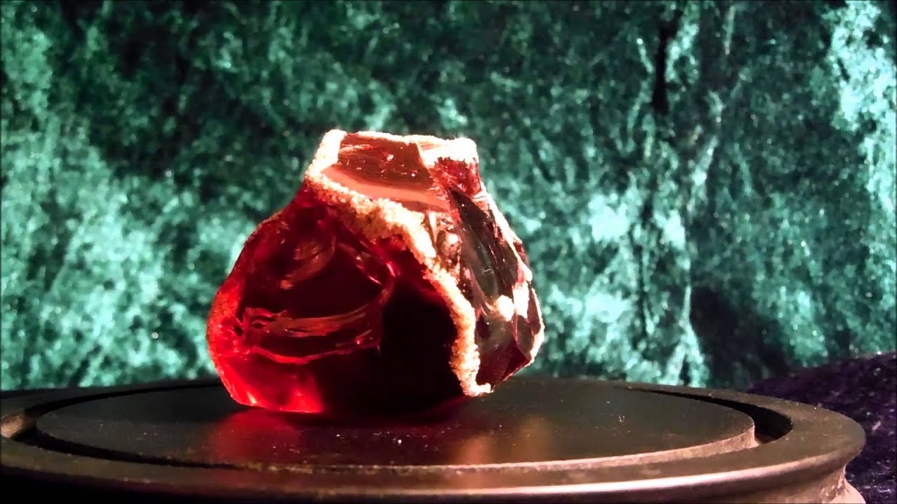
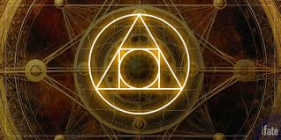
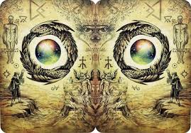
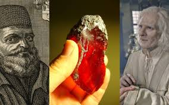
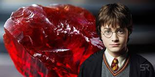

PHILOSOPHER'S STONE

Introduction

The Chinese first prepared and used colloidal gold as an alchemical drug of longevity.2 In fact, the word “alchemy” has its origin in the Chinese words: Kim (gold) and Yeh (juice). The Arabs took the word “kimyeh” (gold juice) and added the definitive article, al, creating the word “al-kimiya,” which then evolved into alchemy
The Philosopher's Stone is a legendary substance associated with medieval alchemy and believed to possess supernatural powers, most notably the ability to transmute base metals into gold and grant eternal life.
The Philosopher’s Stone, a legendary substance said to possess the power to transmute base metals into gold and grant eternal life, has captivated human imagination for centuries. Rooted in alchemical traditions, the Stone became a symbol of spiritual enlightenment, immortality, and the pursuit of ultimate knowledge. This article delves into the myth of the Philosopher’s Stone, exploring its origins, significance, and lasting impact on science and culture.
The philosopher’s stone, and also the stone of wisdom, was the name that medieval alchemists gave to a substance that has the ability to transform base metals into the noblest of metals – gold. For centuries, scientists were possessed by the idea of creating this divine elixir, which could heal people from disease and grant them immortality
Theories

When the science of alchemy first arose, its followers believed that the miraculous substance with the ability to turn tin and copper into gold was a stone. However, over time this belief changed, and medieval scientists began to work on creating a powder or a liquid elixir.
There are many ways to the secret. Physically making a stone is certainly one of them. But it is about the internal work on your self/soul/psyche from which the “magic” comes. Not from possession of the object, but from walking the paths of its manufacture.
In the book "The Treatise of the Three Words," the stone is described as combining all colors and the four elements (air, fire, water, and earth), and its hidden properties are believed to include heat and dryness, while its apparent properties include coldness and moisture.
During the Middle Ages, many alchemists were striving to discover the Philosopher's Stone. Jabir ibn Hayyan is said to have been one of the first to devote a large portion of his life to trying to create this stone.
The concept of the Philosopher’s Stone emerged in the ancient practice of alchemy, which flourished in civilizations such as Egypt, China, and India long before its rise in medieval Europe. Alchemists believed that all matter was composed of four elements — earth, air, fire, and water — and sought to understand the transformations between them
The Stone was believed to possess the power to perfect any substance or being it touched. It could purify metals, turning lead into gold, and was said to produce the Elixir of Life, granting immortality and eternal youth. In this way, the search for the Stone paralleled a quest for spiritual enlightenment, known as "The Great Work" or "Magnum Opus.
The Philosopher’s Stone held profound symbolic meaning, representing the pursuit of wisdom, enlightenment, and divine truth. Alchemical texts often depicted the journey toward the Stone as a process of inner transformation, where the alchemist's soul underwent purification alongside the materials in the laboratory
The ancient Greek historian Herodotus mentioned a group of people who lived in the Horn of Africa and were said to reach the age of 120 without aging. Some later authors placed them in India, but it is possible that they inhabited a region spanning from the Horn of Africa to India.They were known as the Macrobians, renowned for their longevity, lack of aging, and immunity to diseases. However, due to these exceptional characteristics, they are often relegated to the realm of myth by mainstream interpretations.
The Secretum Secretorum, a book erroneously attributed to Aristotle, contains a description of the transmutation substance that closely resembles the general idea of the philosopher's stone (the transmutation elixir), but it is presented in a theoretical/encyclopedic and often vague manner, rather than as a 'detailed recipe' as in some later alchemical texts.
Several legendary alchemists dedicated their lives to the search for the Philosopher’s Stone. Nicolas Flamel, a 14th-century French scribe, became famous for his reputed success in creating the Stone. His life and works were shrouded in mystery, and centuries later, he became a fixture in modern fiction.

Another notable figure is Paracelsus, a Swiss physician and alchemist who believed in the connection between alchemy and medicine. He sought not only material wealth but also the secrets to curing diseases and prolonging life.
Consequently, for centuries people laboured in vain to try and create the Philosopher’s Stone for their own selfish ends, with no result. But thanks to the recent studies of Dr Carl Jung, we now know that the genuine alchemists were hiding a real and identified power behind the symbol of The Philosopher’s Stone: the power of the Alchemist to effect the outcome of things in their world for the better; to join all things together, heal divisions and unite opposites.Jung discovered that the gold the true Alchemist’s had managed to manifest was not the element in their laboratories, but an inner transformation or transmutation that produced a ‘new’ inner person. This new ‘self’ is, in other words, The Philosopher’s Stone and this is not merely a symbol or an object: The Alchemist is The Philosopher’s Stone
Alchemists like Isaac Newton (yes, the physicist) tried to explain the “Philosopher’s Stone” scientifically through chemical reactions, and wrote notes about it in manuscripts that are still at Cambridge University.
Alchemists believed that matter (humans and metals) undergoes a process of purification and transformation called the "Magnum Opus" – beginning with decomposition, then transformation, then rebirth.They said that the stone that could turn lead into gold was also capable of turning a mortal body into an immortal one—because it simply represented “perfection in all things.”
Most texts describe that the Philosopher's Stone can be dissolved in a liquid called the Elixir of Life: It cures all diseases. It prolongs life indefinitely. It gives the body an incorruptible balance.
In the second century AD, the Alexandrian alchemist and scholar, Maria Hebrea, described two methods to fabricate the Stone.These became known as the Ars Magna (Great Art) and the Ars Brevis (Brief Art). At the time of her work alchemy was called chrysopoeia—meaning making gold. Later, the knowledge about the Philosophers’ Stone’s nature and uses became corrupted, and it was erroneously understood that the Stone’s function was to transform base metals into genuine gold. Rather, alchemical gold was a process where antimony and copper were “fermented” with the Elixir (Philosophers’ Stone) and thus transmuted (changed) into prized gold-antimonial bronze known as alchemical gold
George Starkey (1628–1665), a Colonial American physician and alchemist, wrote: Some alchemists who are in search of our Arcanum seek to prepare something of a solid nature, because they have heard the object of their search described as a Stone. Know, then, that it is called a stone, not because it is like a stone, but only because, by virtue of its fixed nature, it resists the action of fire as successfully as any stone. In species it is gold, more pure than the purest; it is fixed and incombustible like a stone, but its appearance is that of a very fine powder.
A Western fable held that Alexander the Great found the Philosopher's Stone in a cave while Arab sources credited their own heroes with the same.[1] The creation of a Philosopher's Stone was detailed in a manuscript called the Clavicula Solomonis, the "Key of Solomon the King". The manuscript fell into possession of 13th century priest named Albertus Magnus, who created a Stone. Persuaded by his acolyte Thomas Aquinas of the Stone's evil and determined to save humanity from the Stone's malicious influence, Magnus broke it into three pieces and scattered them across the glob
The sacred union between the sun, representing sulfur, and the moon, representing mercury, produced the philosopher's stone. The idea was always present in the behavior of mercury, which tends to clump with certain powders and form alloys with other metals. Thus, it was easy to extend the idea of mercury's coagulating nature to include the notion that it formed a stone that could be used, like a tactile stone, to transmute base metals into gold. The stone could also be dissolved in a solution, which became known as the elixir or tincture. The elixir possessed the same properties as the stone and was considered a medicine for treating defects in metals or in humans.
Movies
Harry Potter
In J.K. Rowling's novel, the author recreates the ancient legend with great precision: the Stone was created by Nicolas Flamel (a real-life 14th-century alchemist). The Stone is capable of: transmuting metals into gold (a classic alchemical ability). Creating an "elixir of life" that grants immortality to whoever drinks it.

Rowling used the idea of the Philosopher's Stone to contrast Voldemort's obsession with immortality. Voldemort sought immortality through dark magic (Horcruxes), a method that destroys the soul.
At Hogwarts, the Stone is hidden within secret, arched passages, protected by a series of magical traps. The goal: to protect the Stone from falling into the wrong hands, especially Voldemort.
By the 1990–1991 school year, Albus Dumbledore had begun to grown concerned about the stone's safety in Gringotts due to rising dark forces that might seek the stone for themselves. He invited Flamel to Hogwarts under the pretence of asking him to give a lecture at St Mungo's in order to discuss the stone's security. Flamel was initially not convinced, however after a student stole a Failed Stone he had brought along for the demonstration, which had led to many objects in the castle being temporarily turned into gold including the student herself, he agreed that it would need more protection and accepted Dumbledore's offer to store the stone at Hogwarts
In 1991, the Philosopher's Stone became the target of the Dark wizard Lord Voldemort, who intended to use the Elixir of Life to create a new body for his mangled soul after being disembodied during his failed attack on Godric's Hollow in 1981. It is unknown how Voldemort learned of the Stone. Voldemort used a human host, Quirinus Quirrell, to attempt to steal the Stone from Gringotts. However, by sheer luck and coincidence, Albus Dumbledore had had Rubeus Hagrid retrieve the Stone the very morning of the attempted robbery,in order to give it the protections he had agreed upon with Flamel.
The Stone was placed in a special chamber and guarded by seven enchantments and creatures, provided by the Professors at Hogwarts: Professor Sprout's web of Devil's Snare; Winged Keys, charmed by Filius Flitwick; a life-size board of Wizard's Chess, transfigured and animated by Professor McGonagall; Professor Quirrell's mountain troll; Professor Snape's potion riddle; and the Mirror of Erised, enchanted to hold the Stone by Albus Dumbledore. Rubeus Hagrid's massive three-headed dog, Fluffy, guarded the trap door through which the chamber was accessed
In order to keep them safe from Fluffy and the other obstacles, Dumbledore forbade access to the third-floor corridor to all students.Harry Potter and his best friends Ron Weasley and Hermione Granger suspected that the Stone would be stolen. They mistakenly believed the thief was Hogwarts Potions Master Severus Snape, due to out-of-context conversations that they had overheard and Snape's general nature
Harry felt compelled to protect the Stone and he and his friends, displaying intellectual power and heroism far exceeding their years, fought past the obstacles, until finally Harry was forced to face Quirinus Quirrell and Lord Voldemort himself. In the final showdown, Quirrell lost his life, and Lord Voldemort lost his meagre hold on the physical world once again
After securing the Stone, Albus Dumbledore and Flamel discussed its future and agreed that it was best to destroy it. Flamel ensured he and his wife had enough remaining elixir to set their affairs in order before they would ultimately die, a fate with which they were quite content. Upon learning this, Harry believed that this was a terrible price to pay but Dumbledore assured the young wizard that their deaths would be like "going to bed after a very, very long day", after living for over 600 years
"The Stone was not such a wonderful thing. As much money and life as you wanted, the two things most human beings would choose above all. The trouble is, humans do have a knack of choosing precisely those things that are worst for them." — Albus Dumbledore regarding the true nature of the Philosopher's Ston
After his failure, Voldemort correctly deduced that Dumbledore would destroy the Stone to prevent it from falling into the wrong hands again. Voldemort had then given up on the Stone and waited for another method to regenerate his body.[11] He only wanted the Stone to create a body for himself, and nothing more, as being dependent on the Elixir and Stone for his immortality was unacceptable to him
During the Calamity which affected the wizarding world, starting in the late 2010s, the Philosopher's Stone manifested as a Foundable, guarded by a Wizard's Chess piece Confoundable. Members of the Statute of Secrecy Task Force had to destroy the Chess piece with the Bombardment Spell, which released the stone and allowed it to return to its original time
The Librarians
In The Librarian: Curse of the Judas Chalice (2008), the Philosopher's Stone is discovered inside an ancient Chinese vase purchased at auction by the protagonist, Flynn Carson. The stone exhibits the ability to turn any material it touches into gold, making it a target for many malicious characters.

In the third episode of the first season of the television series The Librarians, Nicholas Flamel, the famous alchemist, is mentioned as an immortal who can be wounded but not killed. He is said to have created the Philosopher's Stone.
Anime
Fullmetal Alchemist
The Philosopher's Stone (賢者の石, Kenja no Ishi), also known by various other names such as the Red Stone, the Fifth Element, also the Sanguine Star according to Rz Rashid as shown in The Sacred Star of Milos, and the Grand Elixir in its liquid form and many more, is a powerful transmutation amplifier appearing in both the anime and manga.
In the story, the Philosopher's Stone is a supernatural substance capable of overriding the law of equivalence—that is, allowing things to be created or transformed without an equivalent.
Its functions in the anime: It gives the alchemist almost unlimited energy. It can revive bodies or heal fatal wounds. It can be used to transcend natural limitations (death, matter, energy).
The stone is not made of minerals or reactions, but of human souls. A huge number of human souls are gathered and their energies are transformed into “compressed alchemical energy” inside a red crystal.
While generally thought to be a literal stone, it would be more accurate to describe the Philosopher's Stone as any vessel that houses energy in the form of human souls. As a result, the Philosopher's Stone can take many forms, ranging from a lumpy, coal-like rock, a polished pearl, or a viscous liquid like the one that Dr. Marcoh owns, or even as a live human being (though at one occasion it is implied that his Philosopher's Stone specifically comprises all his blood). Their color in the purely material form is always a dark, blood-like red. Smaller Stones tend to have a smaller stockpile of power
The Ancient Magus' Bride (Mahou Tsukai no Yome)
In episode 16 of season 1, the "Philosopher's Stone" is referenced in the context of alchemy and magic: "Alchemists seek the Philosopher's Stone, a tool that gives them the power to transmute matter into gold or even life." This quote shows how the "Philosopher's Stone" is used as a symbol of power and transformation in the anime world, without being a physical item actually used by the characters.
In episode 21, the Philosopher's Stone is referenced in the context of magical materials and the ability to grant eternal life: "The discovery of the 'Philosopher's Stone,' a wondrous material that can be an instant learning tool, a cure-all, or grant immortality when consumed." This shows how the Philosopher's Stone is considered in the anime world as a means to achieve greater desires, such as immortality or absolute power.
Use
Egypt
In ancient Egypt, the high priests were said to possess a substance known as khem (sometimes spelled khame). This mysterious substance was said to have properties unlike anything on Earth, and could transform materials into different states of matter and into different elements.
In Hellenistic Egypt, particularly in the city of Alexandria, Greek and Egyptian traditions fused, giving birth to early alchemical thought. These early alchemists pursued the idea of chrysopoeia, or the transmutation of base metals into noble ones, such as gold. Gold, being incorruptible and eternal, symbolized spiritual purity and perfection
Europe
In Christian mysticism, the Stone was associated with Christ as the cornerstone of faith and the ultimate source of spiritual transmutation. The alchemical process mirrored the trials and tribulations of the human spirit, culminating in rebirth and perfection
In Western culture, an Egyptian-born Greek alchemist Zosimos of Panopolis (c. 300 AD) first described the Stone in his Cheirkometa.He contended that the women of Earth were taught metallurgy and the fabrication of the Stone when taken as wives by the fallen angels of heaven.3 Adam is supposed to have passed knowledge of the Philosophers’ Stone to the biblical patriarchs (such as Methuselah), which would account for their unnaturally long life spans
In Western alchemical circles, the Philosophers’ Stone appeared around the twelfth century; and later the Franciscan friar and philosopher Roger Bacon wrote that the Stone could transform imperfect metals into perfect metals as well as extend human life.1 During the German Renaissance, Paracelsus (1493–1541), physician, philosopher, and alchemist, focused on the medicinal use of alchemical products instead of manufacturing alchemical gold. He wrote with relish of the psycho-spiritual awakening and physical longevity occurring from ingestion of the Philosophers’ Stone elixir.1 He called the Stone the “Tincture of the Philosophers” and postulated it was the secret “elixir of life.
As Europe rose from the Dark Ages, the torch of ancient metalworking was passed from the ancient world to a series of European spirituality lovers and scientists. Early researchers from Heinrich Cornelius Agrippa to the great Isaac Newton continued to explore the art of ancient metalworking and search for mystical ways to transform mundane materials into rare and precious ones.
Greek
This concept bears a direct connection to the 'food of the Gods.' In Greek culture, this divine sustenance was known as Nectar and Ambrosia.
In ancient Greece, the legendary stone was seen in a more materialistic light, having usefulness only for the transformation of base metals into gold. Known to the Greeks as chrysopoeia (which literally means “transforming to gold”), it is believed that their legendary substance was one and the same as the ancient Egyptian concept of khem.
Jewish
The basic idea as I remember it is that the Jewish lore was the philosophers stone was the resiness stone that came from the tree of good and evil.. it could give life, it could give wealth, knowledge
Islamic
In ancient Greece, the legendary stone was seen in a more materialistic light, having usefulness only for the transformation of base metals into gold. Known to the Greeks as chrysopoeia (which literally means “transforming to gold”), it is believed that their legendary substance was one and the same as the ancient Egyptian concept of khem.
China
The ancient Chinese had a similar concept to the philosophers’ stone known as Pànăn. Pànăn was said to be a mythical substance which granted powers of energy-generation and immortality. Somewhat unlike the Western concept, the ancient Chinese believed the stone had been formed from a combination of elements and extremely rare herbs
India
The ancient Vedic Indo-Aryans had a drink called Soma. Soma is a Vedic Sanskrit word that literally means "distill, extract, sprinkle", all things crucial in alchemy.
Soma was considered a divine substance with powerful properties. It was associated with various symbolic meanings, including immortality, inspiration, and divine wisdom.
For thousands of years, traditional Indian-Hindu medicine has claimed preparations containing gold have antioxidant and rejuvenating properties.In the Bible we read that Moses, on returning from Mt. Sinai with the Ten Commandments and finding the Hebrews conducting an orgy around a golden calf, seized it and converted it into drinkable gold. This is the earliest record of processed gold consumed by human beings.(Exodus 32:20)
Iran
In Zoroastrianism the old Iranian religion this drink was called Haoma.
Research
The three components necessary for confecting the Stone include: Gold–the prime ingredient. Antimony–this metalloid element occurs in nature as a sulfide ore (stibnite – Sb2S3). Once purified, antimony was called regulus in medieval times, or earlier in history, flowers of antimony. Both purified antimony and stibnite are employed at specific phases in the archetypal synthesis. Flux/Menstruum–this final constituent possessed the ability to dissolve gold without corrosion, yet kept the capacity to congeal, coagulate, or crystallize, under the ideal conditions. By far, the most guarded secret for creating the Stone is the nature of the flux, also called the universal solvent
The philosopher's stone, variously described, is said to be a common substance, found everywhere, but unrecognized and unappreciated. The search for this stone encouraged alchemists from the Middle Ages until the end of the 17th century.
While some attribute the origin of this craft to ancient Egypt, and others to China, the theoretical roots of the Philosopher's Stone can be traced back to Greek philosophy, which was immersed in darkness for a period before reaching the Arabs in the eighth century AD. They refined it until the twelfth century, before bringing it back to Europe.
According to the "History" website, there are four basic properties of stone: it combines heat, cold, dryness, and moisture. Aristotle pointed out that minerals are a mixture of these four elements: two internal ones that form the essence, and two external ones that form the appearance. He concluded that transforming one mineral into another is possible by rearranging these basic properties using a substance the alchemists called the elixir, which is extracted from the philosopher's stone.
According to the American website "livescience," one of Isaac Newton's 17th-century alchemical manuscripts, buried in a private collection for decades, reveals his recipe for a substance believed to be a step toward inventing the magical Philosopher's Stone.The manuscript appeared at auction at Bonhams in Pasadena, California, on February 16, 2015, where it was purchased by the Chemical Heritage Foundation (CHF) of Philadelphia. The handwritten document contains instructions for making "philosophical" mercury, which Newton copied from a text by another well-known alchemist.